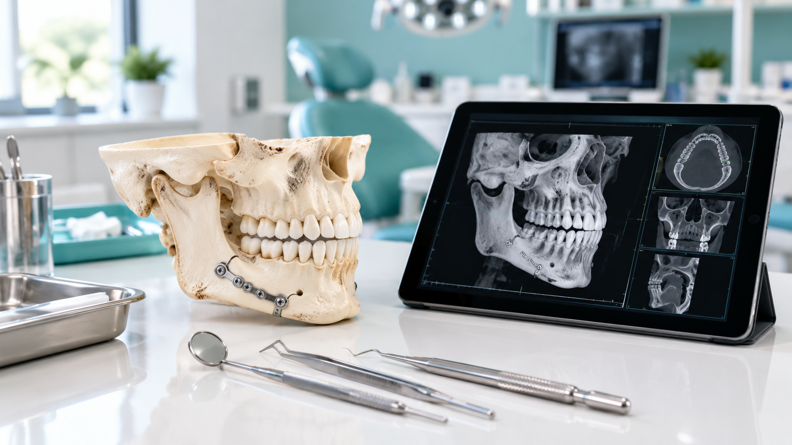
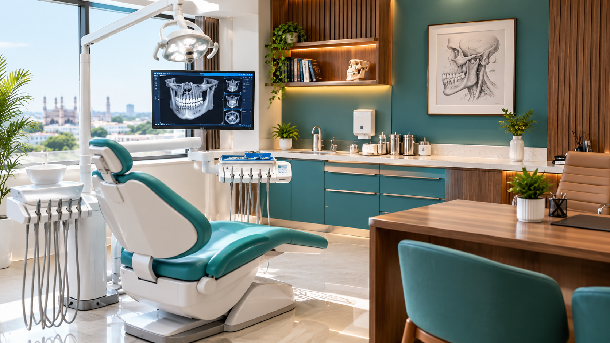

01

Oral surgery
Assessment and surgical care for selected conditions affecting the mouth, teeth and supporting structures.
Ask about this area ↗Thoughtful oral and maxillofacial care, built around clear conversations, careful planning and your individual needs.
Every face tells a different story. A good consultation makes room for yours.
Dr. Arslan Mahmood’s profile describes a practice in oral and maxillofacial surgery, with an emphasis on personal attention and helping patients understand their care options.
Start a conversation ↗Explore common areas within oral and maxillofacial surgery. The right approach depends on an individual assessment and clinical advice.

Assessment and surgical care for selected conditions affecting the mouth, teeth and supporting structures.
Ask about this area ↗
Consultation for concerns involving the jaws and face, with investigation and referral when needed.
Ask about this area ↗Specialist evaluation of selected facial injuries and reconstructive concerns, based on clinical need.
Ask about this area ↗Service descriptions are general information, not a guarantee that every procedure is offered. Please confirm availability directly with the practice.
When you meet with a specialist, it should be easier to understand what comes next. A consultation is a chance to talk through symptoms, review relevant records and discuss possible options.
Tell your storyShare what you are experiencing and what matters to you.
Review the pictureDiscuss examination findings and any relevant imaging.
Understand optionsAsk questions about possible next steps, benefits and risks.
The best next step is an informed one.
Bring your questions. Leave with a clearer understanding of your options.
Send a consultation request and the practice can follow up to discuss availability. For emergencies, seek urgent local medical care rather than using this form.
General answers to help you prepare. Your clinician can advise on your particular situation.
Bring relevant medical records, a list of medicines, any recent scans or reports, and your questions. Contact the practice beforehand if you are unsure what is needed.
Not everyone needs imaging. Your clinician will decide whether an examination, existing records, imaging or other tests are appropriate for your concern.
Yes. Ask about expected benefits, material risks, alternatives, recovery, costs and follow-up before deciding on any procedure.
Use the practice's verified contact channel to confirm current availability, location, fees and whether a particular service is offered.